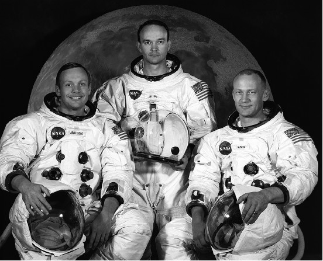
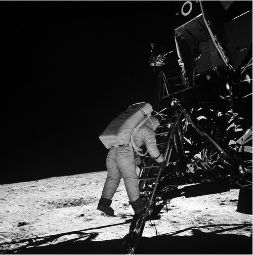
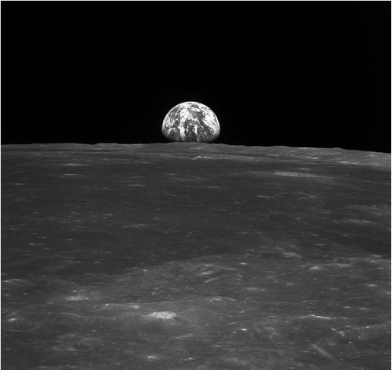

В Море Спокойствия
Прежде чем перейти к рассказу о первой высадке человека на Луне, остановлюсь еще на двух полетах кораблей типа «Аполлон», предшествовавших этому историческому событию. Сняв успешной миссией «Аполлона-8» остроту проблемы, американцы возобновили испытания компонентов своего лунного комплекса. И в 1969 году осуществили две успешные испытательные миссии: «Аполлона-9» на околоземной орбите и «Аполлона-10» на селеноцентрической орбите.
Полет «Аполлона-9» начался 3 марта 1969 года. На его борту находились Джеймс МакДивитт, Дэвид Скотт (David Scott) и Рассел Швейкарт (Russel Schweickart). Первому и последнему из них предстояло устроить своеобразный экзамен лунной кабине в условиях автономного полета. Также требовалось испытать скафандр, в котором надо будет работать на Луне.
Первые трое суток полета были посвящены испытаниям бортовых систем корабля и кабины без их разделения. На четвертые сутки Швейкарт совершил выход в открытый космос. А на пятые сутки начался эксперимент по автономному полету лунной кабины. МакДивитт и Швейкарт заняли в ней свои места, после чего хрупкая конструкция отделилась от командного модуля. Свободный полет «Спайдера» (англ. spider– паук), такой позывной был присвоен кабине, продолжался несколько часов. Максимальное удаление от корабля составило 192 километра. Астронавты смоделировали все операции, которые впоследствии предстояло выполнить их товарищам во время лунных миссий. В том числе и разделение взлетной и посадочной ступеней лунного модуля. Через шесть часов к кораблю возвратилась только взлетная ступень. За исключением мелких неисправностей, испытания прошло успешно.
«Аполлон-10» отправился в полет 18 мая 1969 года. Экипажу корабля – Томасу Стаффорду, Джону Янгу и Юджину Сернану – предстояло повторить то, что сделали их товарищи с «Аполлона-9», но на селеноцентрической орбите. Были голоса и за то, чтобы именно экипажу «Аполлона-10» доверить совершение первой посадки на лунную поверхность. Вполне возможно, что так бы и произошло, если бы советские космонавты к тому времени также совершили облет Луны. Но этого не случилось, и появившийся у американцев запас времени был использован для следующего испытательного полета. Тем более что этого требовали меры безопасности.
Трасса «Земля-Луна» была уже освоена экипажем «Аполлона-8», поэтому можно сказать, что до момента выхода на селеноцентрическую орбиту Стаффорд, Янг и Сернан шли по проторенной дорожке. 21 мая корабль благополучно вышел на орбиту вокруг Луны и астронавты начали подготовку к автономному полету модуля.
Основные события произошли на следующий день, когда Стаффорд и Сернан заняли места в лунной кабине. После проверки бортовых систем была проведена расстыковка и двое астронавтов отправились на встречу с Луной. В ходе полета были сымитированы все операции реальной экспедиции, за исключением посадки. В целом все прошло благополучно, за исключением, пожалуй, момента отделения посадочной ступени. Проблемы начались за 45 секунд до разделения, когда лунный модуль вдруг начал медленно поворачиваться, а за 5 секунд до расстыковки стал быстро и беспорядочно вращаться. В этой ситуации Стаффорд поспешил отделить посадочную ступень, надеясь, что вращение облегченной взлетной ступени будет проще остановить. Но не тут-то было. В какой-то момент астронавтам даже показалось, что они падают на Луну. Лишь хладнокровие Стаффорда помогло обуздать непослушный модуль.
Как оказалось, экипаж дважды в течение минуты переключал режим аварийной навигационной системы из «Стабилизации» в «Автомат». В первый раз по ошибке, а второй раз – из-за сбойных данных гироскопов. Это «щелканье» и привело к возникновению неприятной ситуации. Но хорошо то, что хорошо кончается. Для Стаффорда и Сернана все закончилось хорошо. Вскоре взлетная ступень состыковалась с командным модулем, а 23 мая «Аполлон-10» отправился обратно к Земле. 26 мая корабль благополучно приводнился в Тихом океане.

Экипаж космического корабля «Аполлон-11»:
Нейл Армстронг, Майкл Коллинз, Эдвин Олдрин
Полет «Аполлона-10» уничтожил последние препятствия на пути американцев к высадке на Луне.
Главный полет конца 1960-х годов начался 16 июля 1969 года. На борту стартовавшего с мыса Канаверал «Аполлона-11» находились Нейл Армстронг, Майкл Коллинз и Эдвин Олдрин. Двоим из них предстояло стать первыми землянами, ступившими на поверхность другого небесного тела.
Мы так привыкли называть имена этих трех астронавтов вместе, что даже не задумываемся, почему первую лунную экспедицию доверили именно этим людям. Много лет спустя Дональд Слейтон, отвечавший в НАСА за формирование экипажей, писал, что его главным кандидатом в командиры первой лунной экспедиции был Вирджил Гриссом. После его гибели больше других этой чести заслуживали Фрэнк Борман и Джеймс Мак-Дивитт. Еще трое – Нейл Армстронг, Томас Стаффорд и Чарльз Конрад – также могли бы справиться с заданием блестяще.
Из этой пятерки МакДивитт и Конрад были страшно заняты подготовкой к полету «Аполлона-9», а Томас Стаффорд – подготовкой к полету «Аполлона-10». Совершивший первый в мире облет Луны Фрэнк Борман категорично заявил Слейтону: «Больше не могу». Таким образом, оставался Нейл Армстронг и его экипаж – Эдвин Олдрин и Фрэд Хейз. Но Хейз еще не имел опыта космических полетов, поэтому его заменили Майклом Коллинзом. Вот так и был сформирован экипаж «Аполлона-11».
В день старта внимание всего мира было приковано к мысу Канаверал. Я уже писал о том, как американские средства массовой информации освещали подготовку к старту «Авангарда-1» в декабре 1957 года, старты Алана Шепарда в мае 1961 года и Джона Гленна в феврале 1962 года. То, что происходило в июльский день 1969 года, не идет с предыдущими событиями ни в какое сравнение. Это было нечто такое, что словами описать просто невозможно.
Следили за стартом «Аполлона-11» и в Советском Союзе. Небольшой штришок, опровергающий одно большое заблуждение последних лет: в нашей стране не замалчивали этот полет, о состоявшемся пуске радиостанция «Маяк» сообщила менее чем через минуту после того, как это произошло. Точно так же наши радио и телевидение довольно оперативно сообщали о других этапах миссии. С «картинками», к сожалению, было похуже.
Путь от Земли до Луны «Аполлон-11» преодолел за 75 часов и 19 июля вышел на селеноцентрическую орбиту. Ровно сутки ушли у экипажа корабля на непосредственную подготовку к высадке. И вот Армстронг и Олдрин заняли свои места внутри «Орла» (позывной лунной кабины) и Майкл Коллинз нажал кнопку, освобождающую лунный модуль. От толчка пружин стыковочного механизма кабина и командный модуль разошлись, и Армстронг взял управление «Орлом» на себя.

Нейл Армстронг: «Один маленький шаг человека – гигантский скачок для всего человечества»
Посадка прошла по отработанной схеме. Правда, были два момента, которые заставили поволноваться и членов экипажа, и сотрудников Центра управления полетом. Когда лунный модуль уже шел на спуск, произошел сбой в бортовом компьютере. Эта неприятность могла привести к чему угодно, в том числе и к отмене посадки. На Земле быстро разобрались в сложившейся ситуации и дали команду Армстронгу на продолжение запланированных операций. А когда до прилунения оставались считанные секунды, Армстронг увидел, что автоматика сажает кабину на участок, сплошь усыпанной камнями. Он быстро переключился на ручное управление, отвел модуль чуть в сторону, и лишь затем посадил его. Произошло это 20 июля в 23 часа 17 минут 43 секунды по московскому времени. Через мгновение в гробовой тишине, охватившей зал Центра управления полетом в Хьюстоне, раздался голос Армстронга: «Хьюстон! Это База Спокойствия. “Орел” на Луне».
Итак, свершилось. Люди высадились на Луне. Задача, которую в мае 1961 года сформулировал президент США, была успешно выполнена.
Первые минуты ушли на проверку систем: вдруг надо будет срочно взлетать? И лишь через двадцать минут после посадки астронавты наконец-то получили возможность осмотреться.
Трудно сказать, о чем думал тот сотрудник НАСА, который составлял график действий экипажа «Аполлона-11» на поверхности Луны. Но согласно нему Армстронгу и Олдрину предстояло после посадки. лечь спать. График пришлось ломать, так как трудно найти на Земле человека, который может уснуть, когда за окном расстилаются пейзажи другой планеты. Армстронг и Олдрин потребовали от руководства полетом разрешить им немедленно выйти на поверхность. В Хьюстоне особенно не сопротивлялись и разрешили экипажу лунной кабины начать подготовку к прогулке по Луне.
Через три с половиной часа после посадки Армстронг и Олдрин приступили к надеванию скафандров. Они подошли с этой операции основательно и надевали их с тщательностью парашютистов, понимая, что от этого зависит не только их жизнь, но и успех всей программы. Но вот скафандры надеты, кабина разгерметизирована и астронавты начали спуск на лунную поверхность. Первым шел, как и подобает командиру, Нейл Армстронг. Чтобы ступить на поверхность нашего естественного спутника, ему предстояло преодолеть каких-то два с половиной метра. На это у него ушло несколько минут. Коснувшись грунта, Армстронг произнес фразу, занесенную золотыми буквами в скрижали космической истории: «Этот один маленький шаг для человека – гигантский скачок для человечества».

Земля с поверхности Луны
Вне кабины астронавты провели около двух часов. Первым делом они собрали аварийный запас лунных камней. Армстронг вспоминал, что он засовывал булыжники в карманы скафандра, боясь услышать в ушах приказ с Земли немедленно возвратиться в кабину. К счастью, этого не потребовалось, и дальнейшая работа в Море Спокойствия проходила в спокойном ритме.
Первым делом астронавты установили чуть в стороне от «Орла» телекамеру, которая транслировала на Землю все их действия. А потом были развевающийся звездно-полосатый флаг, прыжки Олдрина по Луне, след его башмака, отпечатавшийся в лунной пыли. В это время в Штатах был душный июльский вечер. Но улицы городов были пустынны – вся Америка приникла к экранам телевизоров и «приобщалась к истории».
Пребывание на Луне было недолгим, всего 21 час 36 минут. Но эти часы запомнили не только астронавты. Их запомнил весь мир.
Возвращение домой прошло без проблем. 24 июля спускаемый аппарат «Аполлона-11» благополучно приводнился в Тихом океане. Астронавтов доставили на борт вертолетоносца «Хорнет» и на две недели заперли в герметичном трейлере-карантине. На всякий случай. А вдруг на Луне были болезнетворные бактерии, способные погубить человечество? «Отсидев свой срок», Армстронг, Коллинз и Олдрин покинули трейлер и в полной мере вкусили плоды полагавшейся им славы.
Полету «Аполлона-11» я хочу посвятить и две следующие главы, чтобы рассказать две истории, которые имеют непосредственное отношение к первой лунной экспедиции, но о которых стараются не вспоминать. Почему это происходит, читатель без труда поймет.